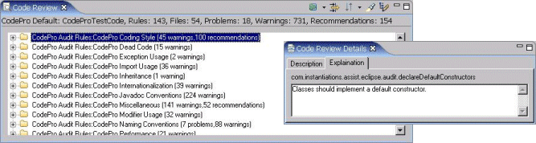
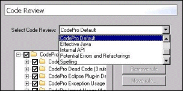
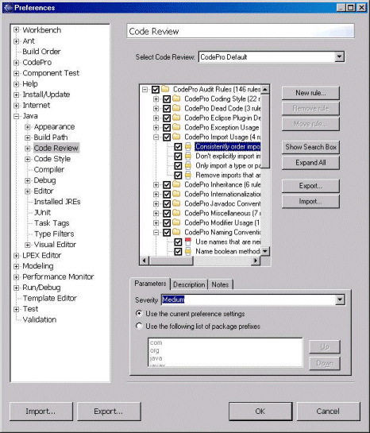
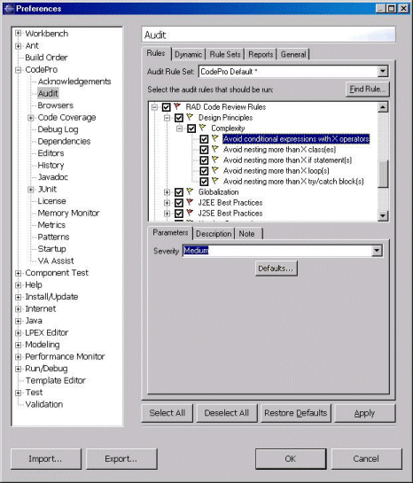
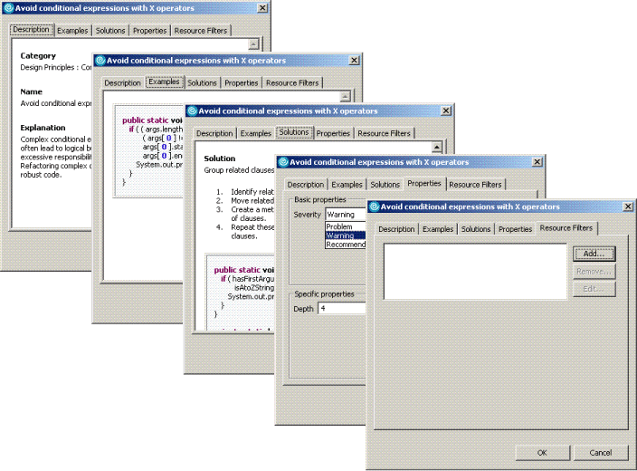

Audit - Integration
into
Rational Application Developer
Integrating CodePro into
Rational Application Developer
All of the audit rules added by CodePro are available within the Application Developer code review facility. This is done by adding both code review rules and
code reviews. Each code review rule is associated with a single audit
rule, and each code review is associated with a single audit rule set.

When CodePro is installed, it adds one new code review for each audit
rule set that is defined. Defining a new audit rule set will cause a new
code review to be added. Removing an audit rule set will similarly remove
the associated code review.

The audit rules that will be visible as code review rules within a
CodePro added code review are those audit rules that are enabled within
the audit rule set associated with the code review. The code review rules
will initially all be enabled within the code review. Disabling a code
review rule does not disable the associated audit rule within its audit
rule set, but does prevent it from being used when that code review is
run. Changing the enablement of audit rules within an audit rule set will
cause the associated code review rules to become visible or invisible (as
appropriate) within the code review.

When a CodePro added code review rule is selected, the same set of
configuration options are available as when the audit rule is selected.
However, the configuration options are shared between all code reviews and
are independent of the settings in any audit rule set. When the code
review rules are first created from the audit rules, their configuration
parameters are set to their default values. Changes to those values are,
of course, remembered across invocations of the workbench.
CodePro added code review rules also appear in some of the pre-defined
code reviews. Which rules appear in which code reviews depends on how the
default code reviews were defined. For example, all of the CodePro added
code review rules appear in the code review named because it is defined to
contain every code review rule from every provider.
Integrating
Rational Application Developer into CodePro
CodePro also makes all of the Application Developer code review rules available for use
within its code audit facility. Each code review rule is represented as an
audit rule within each of the audit rule sets. The severity of each Application Developer added audit rule defaults to the severity of the corresponding code review
rule, but can be changed independently in each audit rule set. Similarly,
CodePro will maintain user-defined notes for each of the Application Developer added audit
rules. Other properties of the code review rules are shared across all
corresponding audit rules and must be set using the code review rules
editor.

Clicking on the Defaults button for any Application Developer code review rule
will open up a dialog showing the rule's Description, Examples,
Solutions, Properties and Resource Filters.

|